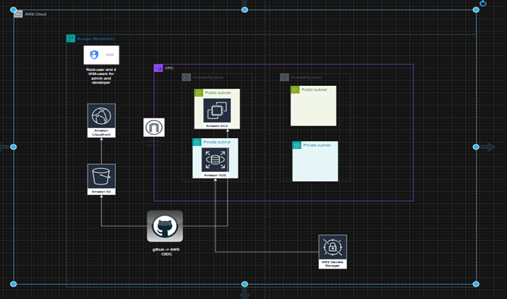
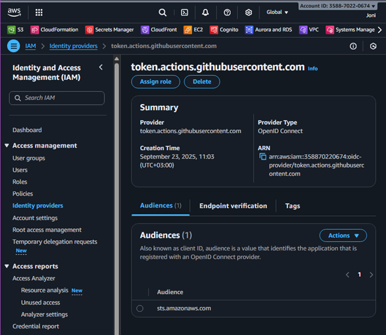
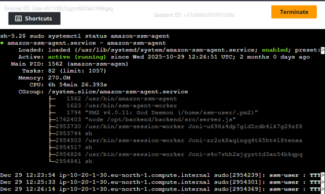
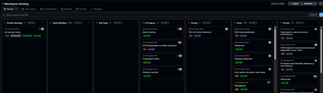

TC:n aikana toimin seuraaveissa rooleissa: AWS, Scrum Master
1. Ympäristön kokonaiskuva
Projekti toteutettiin AWS-ympäristössä käyttäen CloudFrontia, S3:ta,
EC2-instanssia ja RDS-tietokantaa.

2. CI/CD: GitHub → AWS (OIDC)
Julkaisu automatisoitiin GitHub Actionsin avulla. GitHub yhdistyy AWS:ään
OpenID Connect (OIDC) -mekanismin kautta ilman pysyviä AWS access key
-avaimia. Tämä oli omasta mielestäni parempi tapa kuin ohjeissa mainittu tyyli ja halusin kokeilla jotain uutta.

3. EC2-hallinta AWS Systems Managerilla
EC2-instanssia hallitaan AWS Systems Manager Session Managerin kautta.
SSH-avaimia tai avoimia hallintaportteja ei tarvita.

4. Alkuvaihe: Self-signed SSL → siirtymä Nginx-ratkaisuun
Projektin alkuvaiheessa HTTPS toteutettiin EC2-instanssissa
itseallekirjoitetun SSL-sertifikaatin avulla, jotta sivu saatiin
näkyviin ja toimimaan CloudFrontin kautta.

Samalla backendin eteen lisättiin Nginx reverse proxy, joka välittää
liikenteen Node.js-backendille.

6. Nginx-konfiguraatio
Alla oleva kuva näyttää, että EC2 hyväksyy liikennettä vain
CloudFrontista ja että pyynnöt ohjataan Node.js-backendille
reverse proxyn kautta.

7. Nginx-palvelun tila
Nginx-palvelu on käynnissä ja toimii oikein EC2:lla.

Stackit ja koodit (CloudFormation)
CloudFormation-templatet on sijoitettu erilliseen kansioon, jotta
HTML-sivu pysyy selkeänä ja koodi on helppo tarkastella kokonaisuutena.
VPC stack
VPC-template
Data / RDS stack
Data-template
App stack
App-template
Scrum Master
Toimin TC:n aikana Scrum Masterina. Tämä rooli oli mieluisa, kun siihen pääsi mukaan ja suunnittelemaan githubissa backlogit yms.

Yhteenveto ja opit
Mitä olen oppinut ja oivaltanut?
Alla oleva kuva näyttää, että EC2 hyväksyy liikennettä vain
CloudFrontista ja että pyynnöt ohjataan Node.js-backendille
reverse proxyn kautta.
Mitkä tavoitteet toteutuivat ja mitkä jäivät toteutumatta?
Alla oleva kuva näyttää, että EC2 hyväksyy liikennettä vain
CloudFrontista ja että pyynnöt ohjataan Node.js-backendille
reverse proxyn kautta.
Mitä opin suunnitelman ulkopuolelta?
Alla oleva kuva näyttää, että EC2 hyväksyy liikennettä vain
CloudFrontista ja että pyynnöt ohjataan Node.js-backendille
reverse proxyn kautta.
Miten näen tulevaisuuden
Millaiseen työhön haluan sijoittua?
Kuinka opintojakso tuki niitä tavoitteita?
Mitä osaamista minun tulee vielä hankkia, jotta saavutan tavoitteeni?
Alla oleva kuva näyttää, että EC2 hyväksyy liikennettä vain
CloudFrontista ja että pyynnöt ohjataan Node.js-backendille
reverse proxyn kautta.
Mitkä ovat omat vahvuuteni ja ovatko ne selventyneet?
Alla oleva kuva näyttää, että EC2 hyväksyy liikennettä vain
CloudFrontista ja että pyynnöt ohjataan Node.js-backendille
reverse proxyn kautta.
Miksi valitsin juuri nämä dokumentit/työt portfoliooni?
Alla oleva kuva näyttää, että EC2 hyväksyy liikennettä vain
CloudFrontista ja että pyynnöt ohjataan Node.js-backendille
reverse proxyn kautta.